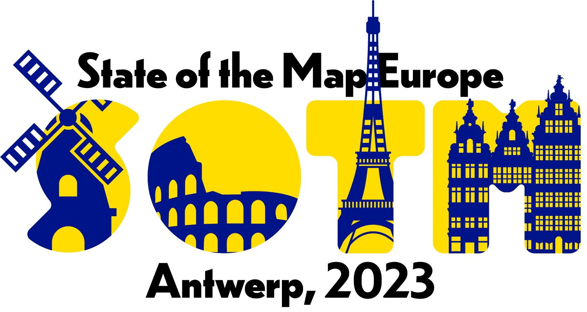

Belgium - Antwerp - Nov 10-12th
Organized by OpenStreetMap Belgium
with practical support from TomTom
Join us in Antwerp for the third State of the Map Europe, from Friday November 10th till Sunday November
12th.
There will be space for 500 participants, with two main tracks as well as the usual unconference part of the event.
Sign up here for updates about the event!
There will be space for 500 participants, with two main tracks as well as the usual unconference part of the event.
Sign up here for updates about the event!